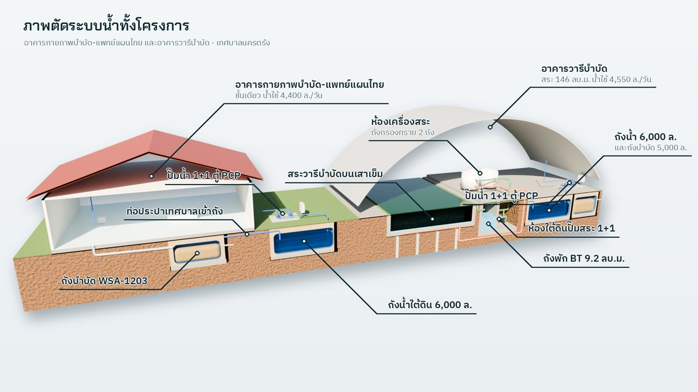

ระบบน้ำของอาคารทั้งสองหลัง ตั้งแต่ท่อประปาถึงสระวารีบำบัด
เว็บไซต์นี้อธิบายว่าน้ำเดินทางอย่างไรในโครงการ น้ำประปาเข้าถังใต้ดิน ปั๊มส่งขึ้นอาคาร สระวารีบำบัดหมุนเวียน กรอง ฆ่าเชื้อ และอุ่นน้ำตลอดวัน น้ำเสียผ่านถังบำบัดก่อนออกท่อสาธารณะ ทุกตัวเลขมาจากแบบก่อสร้างและรายการคำนวณชุดล่าสุด คลิกส่วนใดของภาพเพื่อเข้าไปดูรายละเอียด

ดูการจำลองการทำงาน 3 มิติ น้ำไหลจริง ปั๊มเดินหยุดตามระดับน้ำ
เลือกหัวข้อ
ระบบน้ำประปาทั้งสองอาคาร
ถังใต้ดิน ปั๊ม 1+1 ถังแรงดัน ตู้ PCP ดูการทำงาน 5 สถานการณ์ กราฟแรงดัน และตัวเลขเทียบสองอาคาร
ปั๊มทำงานอย่างไร
ภาพตัดปั๊มเคลื่อนไหว การดูดยกจากถังใต้ดิน การวางปั๊มสระให้น้ำไหลเข้าเอง และกราฟจุดทำงานพร้อมปรับรอบ VSD
หมุนเวียน กรอง ฆ่าเชื้อ อุ่นน้ำ
ภาพด้านข้างระบบสระ 6 โหมดการทำงาน เส้นทางน้ำใน 1 รอบ อุณหภูมิตามเส้นทาง และแบบจำลองเวลาอุ่นน้ำ
จากสุขภัณฑ์ถึงท่อสาธารณะ
ท่อเมน 6" ปลอกผ่านคาน ถังบำบัดเติมอากาศ ถังดักไขมัน และท่อน้ำฝนรอบอาคาร
แปลนระบบน้ำ 2 อาคาร
แปลนรวมทั้งโครงการ ซูมและเลื่อนได้ เลือกดูทีละระบบหรือทีละอาคาร
อุปกรณ์ที่เลือกใช้
รุ่นอุปกรณ์ในแบบ PL และ SN พร้อมภาพจากผู้ผลิตและทางเลือก